R4H2O: Level 1
Level One
05 July 2022
Learning Objectives Level 1
- Apply the principles of strategic data science to solve water problems
- Write R code to load, analyse, and visualise data
- Diagnose water quality data with descriptive statistics
- Develop presentations, reports, and applications to share results
Course Book
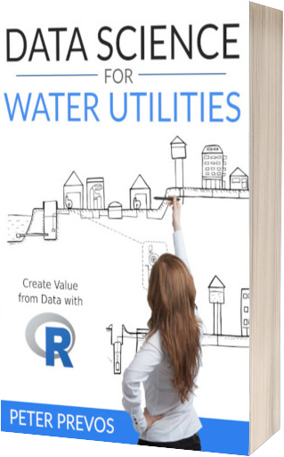
Program Level 1
- Principles of Data Science
- Basics of the R Language
- Case Study: Channel flows
- Case Study: Water quality data
- Reading CSV and Spreadsheet data
- Descriptive Statistics
- Visualise data with ggplot2
- Data science workflow
- Creating data products

Introductions
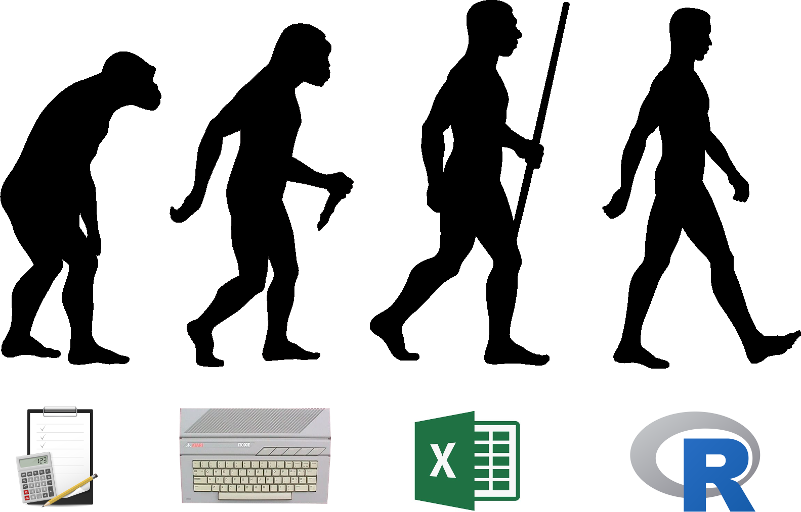
Data Science Learning Curve
Principles of Data Science
What is Data Science?
Conway Venn Diagram (drewconway.com).
Many data scientists have published modifications of this model. Can you think of some other competencies for data scientists?
Don’t Believe the Hype
Source: Harvard Business Review.
What is Good Data Science?
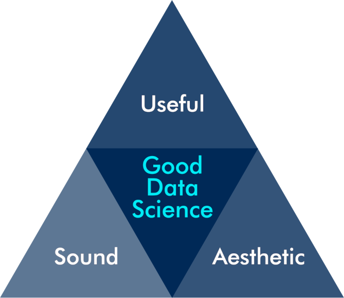
Vitrivian triangle (venustas, firmitas, utilitas)
What is Useful Data Science?

Spreadsheets are Chaos

Code is Poetry: R
library(readr)
library(dplyr)
labdata <- readr::read_csv("data/water_quality.csv")
group_by(labdata, Measure) %>%
summarise(min = min(Result),
mean = mean(Result),
sd = sd(Result))## # A tibble: 4 × 4
## Measure min mean sd
## <chr> <dbl> <dbl> <dbl>
## 1 Chlorine Total 0.025 0.499 0.499
## 2 E. coli 0 0.00789 0.136
## 3 THM 0.0005 0.0366 0.0978
## 4 Turbidity 0.05 0.360 1.03Code is Poetry: Python
import pandas as pd
import numpy as np
labdata = pd.read_csv("data/water_quality.csv")
labdata.groupby("Measure")["Result"].agg([np.min, np.mean, np.std])## amin mean std
## Measure
## Chlorine Total 0.0250 0.498967 0.498730
## E. coli 0.0000 0.007895 0.135584
## THM 0.0005 0.036565 0.097821
## Turbidity 0.0500 0.360327 1.025126Basics of the R Language
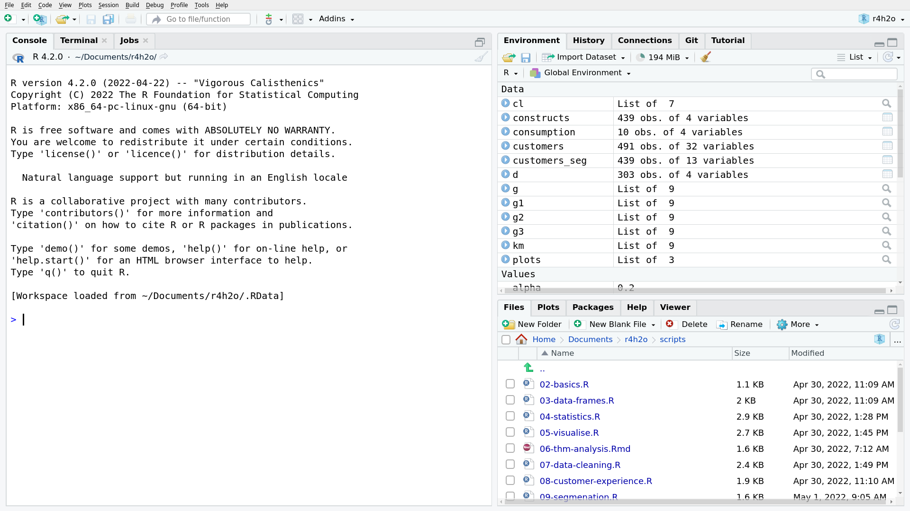
Desktop version
- Download and install R and RStudio
- On Windows, install RTools
- Download course materials
- Unzip folder
- In RStudio: File > Open Project
- Open
r4h2o.Rproj
Cloud Version
- Register at cloud.rstudio.com
- New Project > New Project From Github Repo
https://github.com/pprevos/r4h2o/
- RStudio will download the project files
Principles of R
- Console (REPL: Read-Eval-Print Loop)
- Mathematical operators (
+ - * ^ %% %/%) - Variable assignment
- Assignment operator (
<-versus=) - Functions:
sum(),prod(),abs(),log(a, base = b)- Parameters
- Use
=sign - Auto-completion
BODMAS
## [1] -13Arithmetic
## [1] 0.01767146## [1] 150Vectors
Basic Plotting 1
diameter <- 50:350
pipe_area <- (pi / 4) * (diameter / 1000)^2
plot(diameter, pipe_area, type = "l", col = "blue", main = "Pipe Area")
abline(v = 150, col = "grey", lty = 2)
abline(h = (pi / 4) * (150 / 1000)^2, col = "grey", lty = 2)
points(150, (pi / 4) * (150 / 1000)^2, col = "red")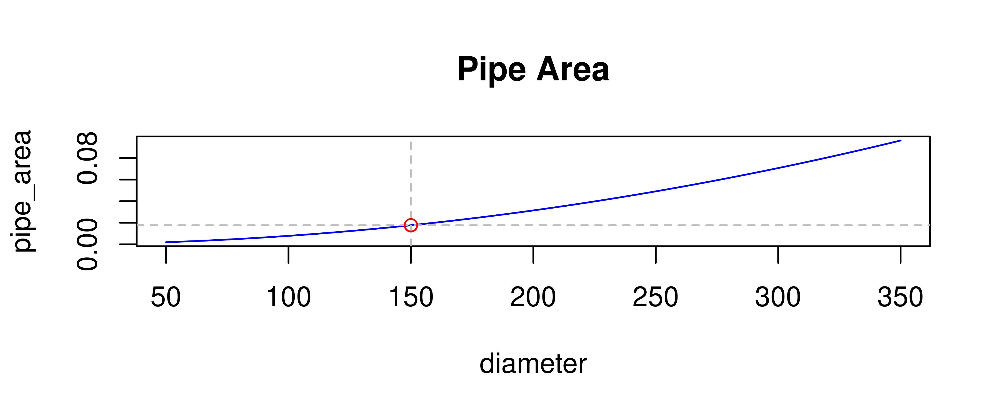
Coding Principles
 First computer bug (1947)
First computer bug (1947)
Open: scripts/02-basics.R
Variable Names
Use meaningful variable names and use a consistent naming convention
flowdaily: All lowercaseflow.daily: Period-separatedflow_daily: Snake caseflowDaily: Camel caseFlowDaily: Upper camel case
Bugs
- Debugging (step through code)
- Typos (lintr)
- Look at indentation
- Error messages (copy and paste into search engine)
- Help files
Scripts and Projects
- Working Directory
- Open Script
- Commenting
- Indentation
R4H2O Cheat Sheet
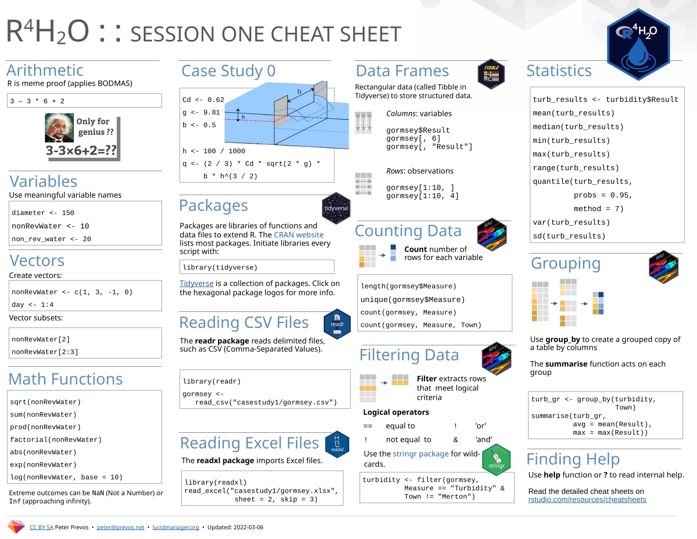
Case Study 0: Channel Flow
Discharge formula
\[Q = \frac{2}{3} C_d \sqrt{2g} \; lh^\frac{3}{2}\]
- \(Q\): Discharge in m3/s
- \(C_d\): Discharge coefficient
- \(g\): Acceleration of gravity
- \(l\): Crest length [m]
- h: Head above crest [m]
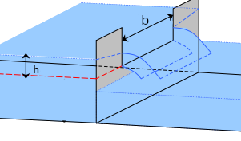
Coding Practice
Create an R script and answer:
- What is the flow (\(Q\)) in the channel in m3/s when the height \(h = 100\) mm?
- What is the average flow for these three heights: 150mm, 136mm, 75mm, in litres per second?
- Plot the flow in m3/s for all heights between 50mm and 500mm.
\(Q = \frac{2}{3} C_d \sqrt{2g} \; lh^\frac{3}{2}\)
- \(C_d C_d=0.62\)
- \(g = 9.81 m/s^2\)
- \(l = 0.5 m\)
Solution
scripts/case-study-0.R
# Define constants
cd <- 0.62
g <- 9.81
b <- 0.5
# Question 1
# Flow in m3/2 when h = 100 mm
h1 <- 100 / 1000
q1 <- (2 / 3) * cd * sqrt(2 * g) * b * h1^(3 / 2)
q1## [1] 0.02894809
Exploring Data with Tidyverse
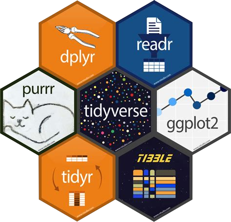
Base R functions
- Basic programming functions
- Arithmetic
- Statistics
- Plotting
- Extensible with functions (packages)
R Packages
- Packages to extend base functionality
- Distributed mainly through CRAN
- Comprehensive R Archive Network
- Install with
install.packages("dplyr") - Call library to access functions:
library(dplyr) - Or, add library name and two colons:
dplyr::filter()
Tidyverse
- Collection of R packages
- Easy data manipulation
- ‘syntactic sugar’
- Activate with
library(tidyverse)or individual packages
Install the Tidyverse packages on your (cloud) computer
Case Study 1: Water Quality
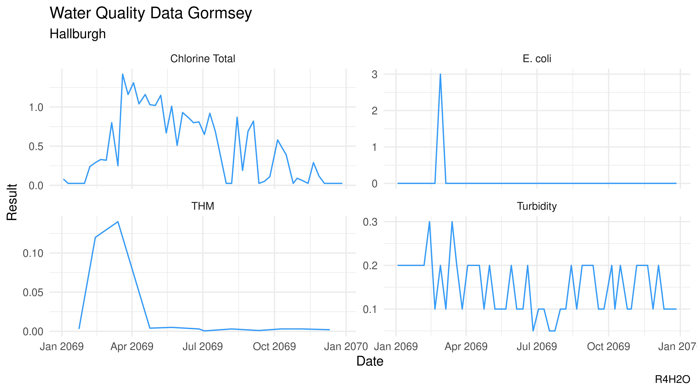
Obtaining Data
- Database (SQL, Oracle)
- Desktop files (spreadsheets, CSV)
- Web (HTML, XML, JSON)
- API
- Scraping
Reading CSV files
readrpackage for CSV files (part of Tidyverse)read_csv()faster alternative forread.csv()- Look at help text
- File names in R:
- Unix-based (slash instead of backslash)
# CSV Files
library(readr)
labdata <- read_csv("data/water_quality.csv")
# Reading Excel spreadsheets
labdata <- readxl::read_excel("data/water_quality.xlsx",
skip = 2, sheet = "data")Open scripts/03-data-frames.R
Variable Classes
- Integer (\({\ldots -3, -2, -1, 0, 1, 2, 3, \ldots}\))
- Numeric (Real numbers) (\(\mathbb{R}\))
- Complex numbers (\(a + bi\))
- Text (
"abcd") - Dates (
"2022-07-05") - Factors (classifications):
(
"Male", "Female", "Other") - Boolean (
TRUE,FALSE)
Variable Types
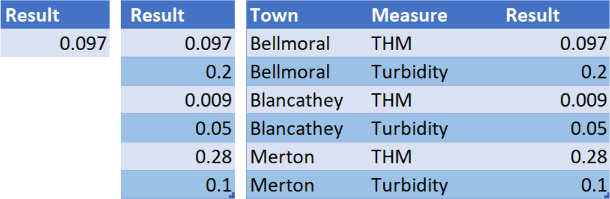
Scalar, vector and data frame / tibble (matrix)
Explore Data Frame Properties
Exploring data frames
df[rows, columns]df$columnglimpse(df)
labdata[12:13, ]
labdata[, 4:5]
labdata[1:2, c(2, 4:5, 6)]
labdata[1:2, c(-1, -3, -7)]
labdata$Date[1:6]What is the sample number of the last sample in the Gormsey data?
Hint, use the nrow() function.
Conditionals
Compare variables
Filtering

Counting Results
## [1] 2422## [1] "Chlorine Total" "E. coli" "Turbidity" "THM"##
## Chlorine Total E. coli THM Turbidity
## 760 760 168 734dplyr counting
turbidity <- filter(labdata, Measure == "Turbidity")
turbidity_count <- count(turbidity, Suburb, name = "Samples")
turbidity_count## # A tibble: 7 × 2
## Suburb Samples
## <chr> <int>
## 1 Blancathey 104
## 2 Hallburgh 105
## 3 Merton 105
## 4 Southwold 105
## 5 Swadlincote 105
## 6 Tarnstead 105
## 7 Wakefield 105Coding Practice
Write a script to answer these questions:
- Create a table of the number of E. coli regulation breaches by
suburb (
Result > 0). - Which sample point has the most number of samples taken?
- On how many days were samples taken?
Solutions in scripts/case-study-1.R
Descriptive Statistics
Measures of:
- Frequency (counting)
- Central tendency (mean, median, mode)
- Dispersion (range, variance)
- Position (percentiles)
- Shape (skew and kurtosis)
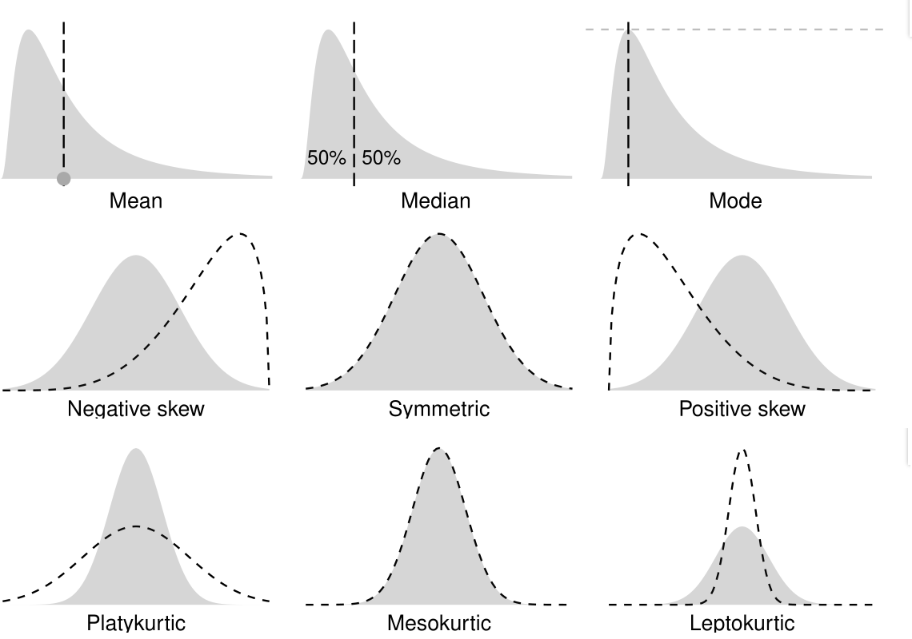
Open scripts/04-statistics.R
Central Tendency
turbidity <- filter(labdata, Measure == "Turbidity")
mean(turbidity$Result)
sum(turbidity$Result) / length(turbidity$Result)
median(turbidity$Result)No standard function for calculating the mode.
Measures of Dispersion
\[s=\sqrt{\frac{\sum_{i=1}^n (x_i-\bar{x})^2}{n-1}}\]
Measure of Position (Quantiles and Percentiles)
- Place the observations in ascending order: \(y_1, y_2, \ldots y_n\).
- Calculate the rank (\(r\)) of the required percentile
- Interpolate between adjacent numbers: \[y_r = y_{\lfloor r \rfloor}+ (y_{r_{\lceil r
\rceil}} - y_{\lfloor r \rfloor})(r - \lfloor r \rfloor)\]
- \(y\): Observation
- \(r\): Ranking number
- \(\lfloor r \rfloor\): Floor or \(r\)
- \(\lceil r \rceil\): Ceiling of \(r\)
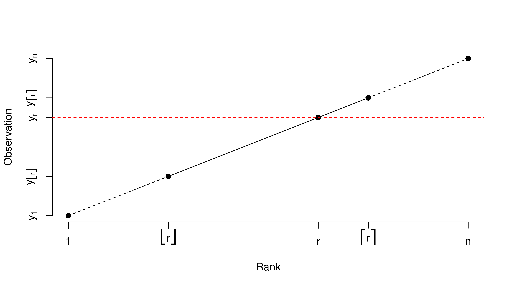
Measures of Position (continued)
## Min. 1st Qu. Median Mean 3rd Qu. Max.
## 0.0500 0.1000 0.2000 0.3603 0.2000 8.8000## [1] 0.05 0.10 0.20 0.20 8.80## 95%
## 0.425Measures of Position (continued)
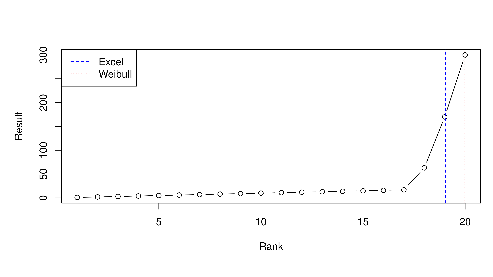
Grouped Analysis

Grouped Analysis
measures <- group_by(labdata, Measure, Suburb)
summarise(measures,
Samples = n(),
Mean = mean(Result),
Median = median(Result),
p95 = quantile(Result, type = 6, probs = 0.95))## # A tibble: 28 × 6
## # Groups: Measure [4]
## Measure Suburb Samples Mean Median p95
## <chr> <chr> <int> <dbl> <dbl> <dbl>
## 1 Chlorine Total Blancathey 104 0.824 0.865 1.56
## 2 Chlorine Total Hallburgh 105 0.373 0.19 1.16
## 3 Chlorine Total Merton 107 0.311 0.1 1.35
## 4 Chlorine Total Southwold 105 0.308 0.16 0.984
## 5 Chlorine Total Swadlincote 105 0.339 0.32 0.764
## 6 Chlorine Total Tarnstead 105 0.225 0.15 0.704
## 7 Chlorine Total Wakefield 129 1.00 1.07 1.88
## 8 E. coli Blancathey 104 0 0 0
## 9 E. coli Hallburgh 105 0.0286 0 0
## 10 E. coli Merton 107 0.0187 0 0
## # … with 18 more rowsCoding Practice
- Which suburb recorded the highest level of chlorine?
- What is the average 95^th percentile of the turbidity for the towns in Gormsey, using the Weibull method?
Answers in scripts/case-study-1.R
Program Session 2
- Session 1 recapitulation
- Principles of visualising data
- Visualising data with ggplot2
- Data Science Workflow
- RMarkdown
- Learning R
Session 1 recapitulation
Coding Challenge
- Go to the Bureau of Meteorology website
- Download daily rainfall data for your favourite weather station
- Determine the top five years with the highest total rainfall
- Tips:
- Variable names with spaces need to be between back ticks:
`
variable name` - The data has missing values. Use the
na.rm = TRUEoption in thesum()function - Use the
slice_max()function to list the top five years
- Variable names with spaces need to be between back ticks:
`
Solution
library(tidyverse)
# Bridgewater weather station
bom <- read_csv("data/IDCJAC0009_081058_1800_Data.csv")
bom_grouped <- group_by(bom, Year)
bom_annual <- summarise(bom_grouped,
Rainfall = sum(`Rainfall amount (millimetres)`,
na.rm = TRUE))
slice_max(bom_annual, order_by = Rainfall, n = 5)## # A tibble: 5 × 2
## Year Rainfall
## <dbl> <dbl>
## 1 1973 939.
## 2 2010 864.
## 3 1974 755.
## 4 1903 699.
## 5 1956 674.Visualising Data
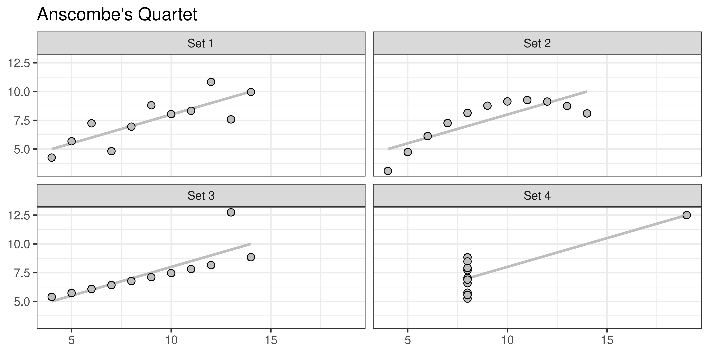
Datasaurus Dozen
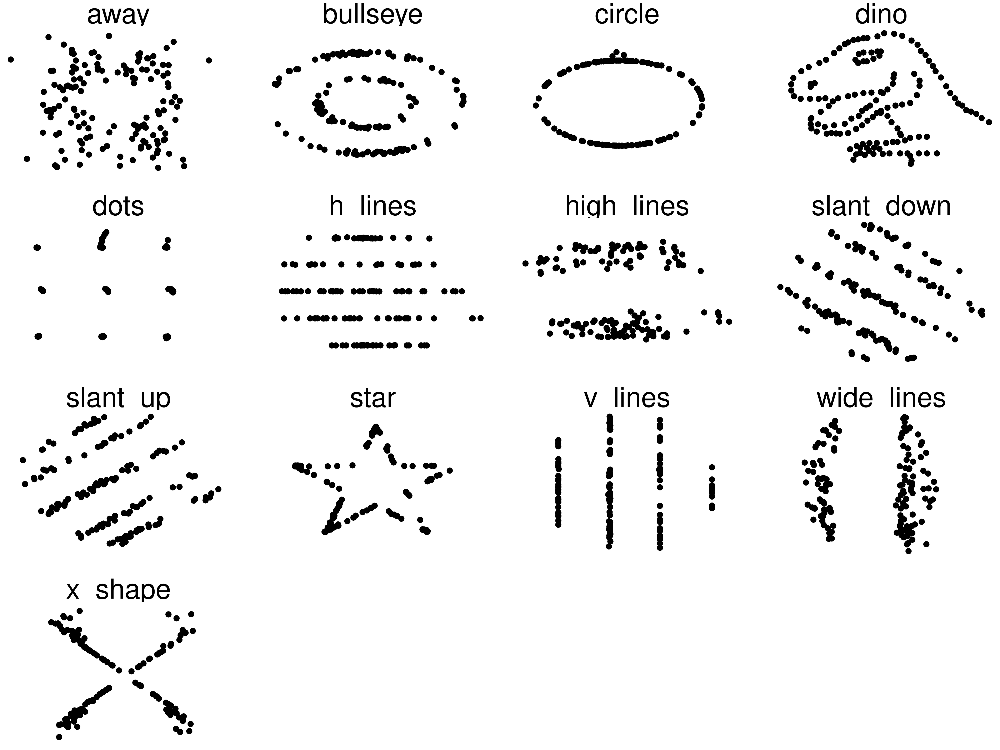
Basic Plotting
- Best for exploratory visualisations
- Plotting functions
plot()barplot()histogram()boxplot()
- Annotation functions (add elements to the plot)
abline()points()
Base plotting parameters
pch: the plotting symbol (default is open circle)lty: the line type (default is solid line), can be dashed, dotted, etc..lwd: the line width, specified as an integer multiplecol: the plotting colour, specified as a number, string, or hex codexlab: character string for the x-axis labelylab: character string for the y-axis label
Plotting Example
scripts/04-statistics.R end of script
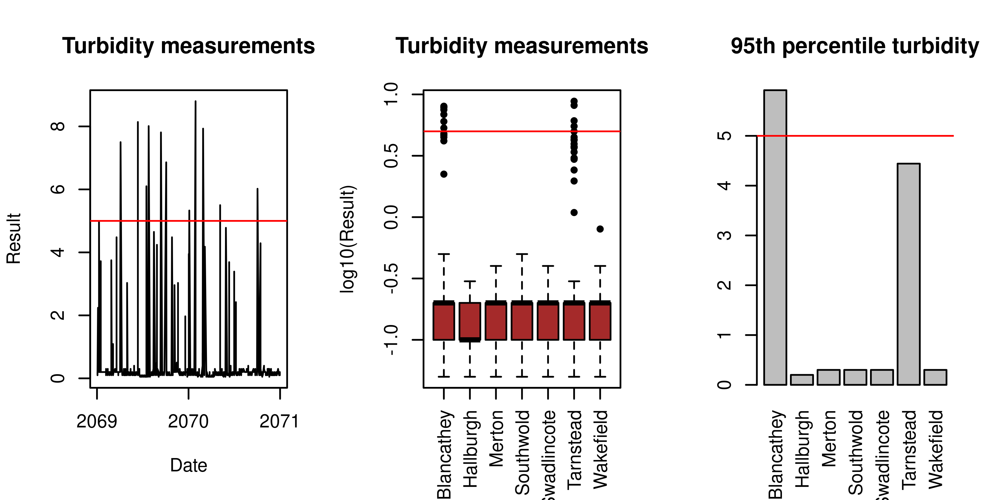
Data Story-Telling

r/dataisugly
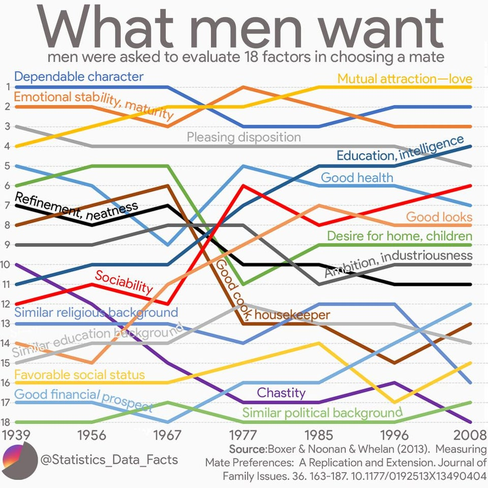
r/dataisbeautiful

Solution

Jackson Pollock

Jackson Pollock (1952) Blue Poles number 11. Drip Painting in enamel and aluminium paint with glass on canvas (National Gallery, Canberra).
Piet Mondrian
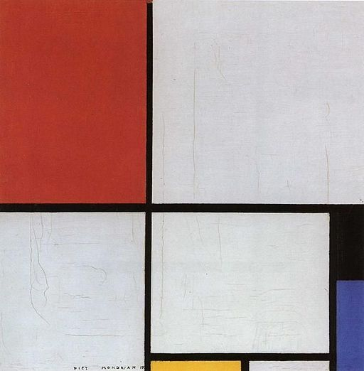 Piet Mondrian (1928) Composition with red, yellow and blue. Oil on canvas (Municipal Museum, the Hague).
Data-Pixel Ratio
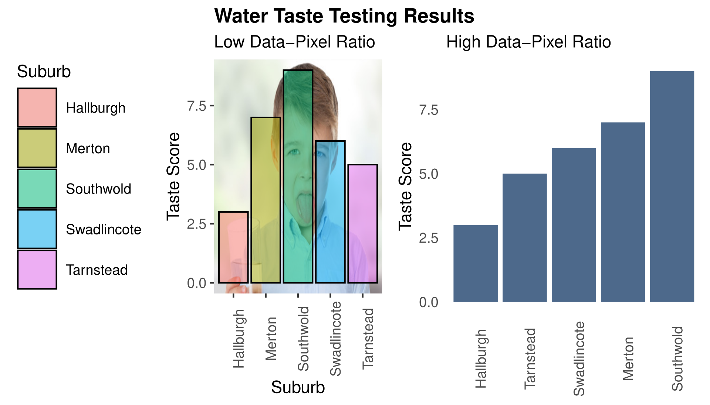
ggplot2 package

scripts/05-visualise.R
Grammar of Graphics
- Data: base material
- Aesthetics: graph variables to be visualised
- Geometries: shapes that represent the data
- Facets: divide a visualisation into sub-plots.
- Statistics: data summaries, such as trend lines.
- Coordinates: how data is represented on the canvas
- Themes: non-data pixels
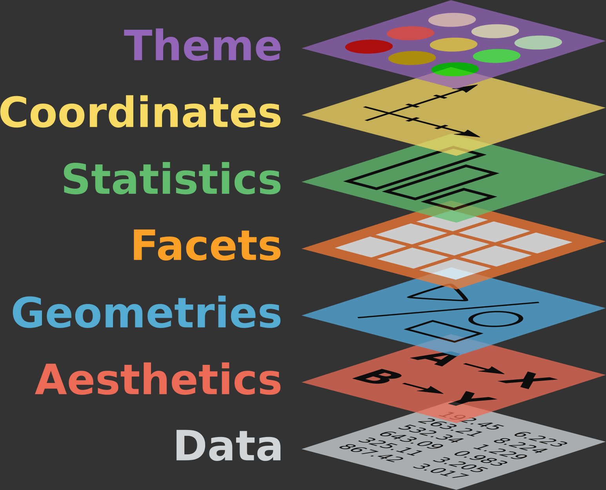
Examples 1
Color Palettes
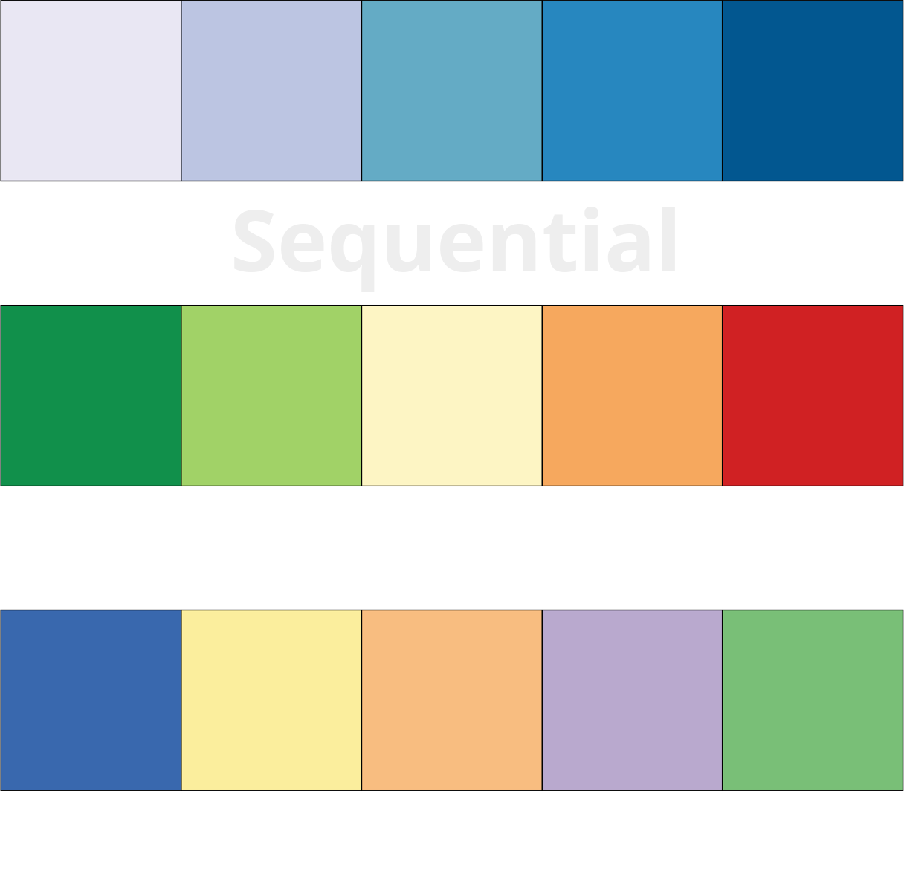
ColorBrewer
Facets
Statistics
Coordinates
ggplot(turbidity, aes(Town, Result)) +
geom_boxplot() +
scale_y_log10(name = "Samples (log)",
n.breaks = 10) +
coord_flip()scale_x_log10(): Logarithmic scale.scale_x_discrete(): Discrete variables (names).scale_x_continuous(): Continuous variables, such as measurements.scale_x_date(): For displaying dates and times.
Themes
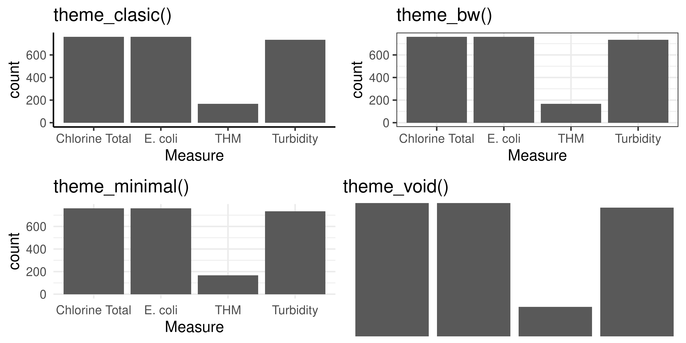
Combining data sets
chlorine <- filter(labdata, Measure == "Chlorine Total")
chlorine_gr <- group_by(chlorine, Suburb)
chlorine_avg <- summarise(chlorine_gr, avg = mean(Result))
ggplot(chlorine, aes(Date, Result)) +
geom_line() +
facet_wrap(~Suburb) +
geom_hline(data = chlorine_avg, aes(yintercept = avg), col = "blue", lty = 2) +
theme_minimal() +
labs(title = "Average total chlorine leves in labdata",
x = NULL, y = "Total Chlorine")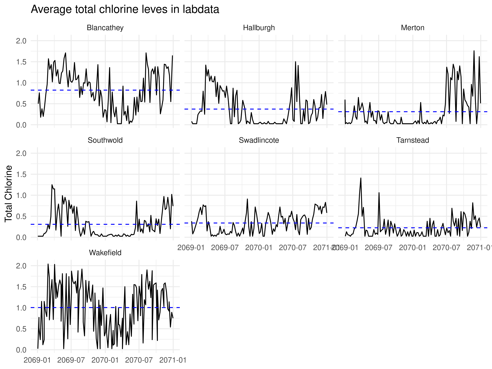
ggplot2 Cheat Sheet

Data Science Workflow

Replicable and Reproducible
coderefinery.github.io/reproducible-research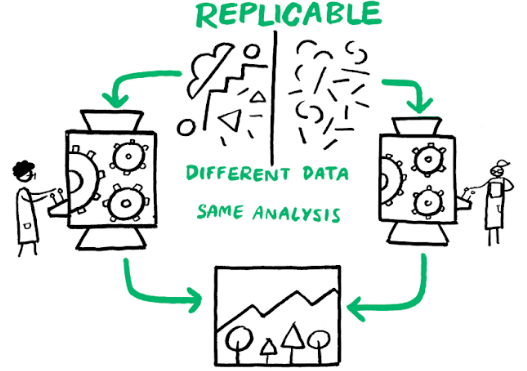
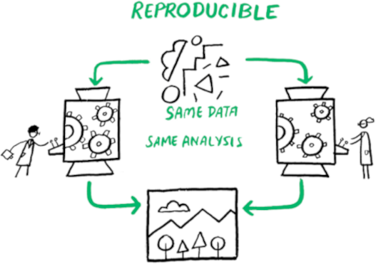
Define
The regulator for water quality has released a new guideline that lowers the maximum value for trihalomethanes (THMs) at the customer tap to 0.20 mg/l. This report assesses the historical performance of the Gormsey water system to evaluate the risk of non-compliance, assuming no operational changes are implemented.
Load and Tidy
library(readr)
library(dplyr)
labdata <- read_csv("data/water_quality.csv")
thm <- filter(labdata, Measure == "THM")
glimpse(thm)## Rows: 168
## Columns: 7
## $ Sample_No <dbl> 608188, 618273, 620904, 629974, 623529, 638727, 659889, 6…
## $ Date <date> 2069-01-11, 2069-01-16, 2069-01-16, 2069-01-23, 2069-01-…
## $ Sample_Point <chr> "BL_15694", "SO_12411", "SW_17608", "TA_16763", "ME_15385…
## $ Suburb <chr> "Blancathey", "Southwold", "Swadlincote", "Tarnstead", "M…
## $ Measure <chr> "THM", "THM", "THM", "THM", "THM", "THM", "THM", "THM", "…
## $ Result <dbl> 0.00300, 0.00300, 0.02100, 0.00300, 0.02600, 0.00300, 0.0…
## $ Units <chr> "mg/L", "mg/L", "mg/L", "mg/L", "mg/L", "mg/L", "mg/L", "…Explore
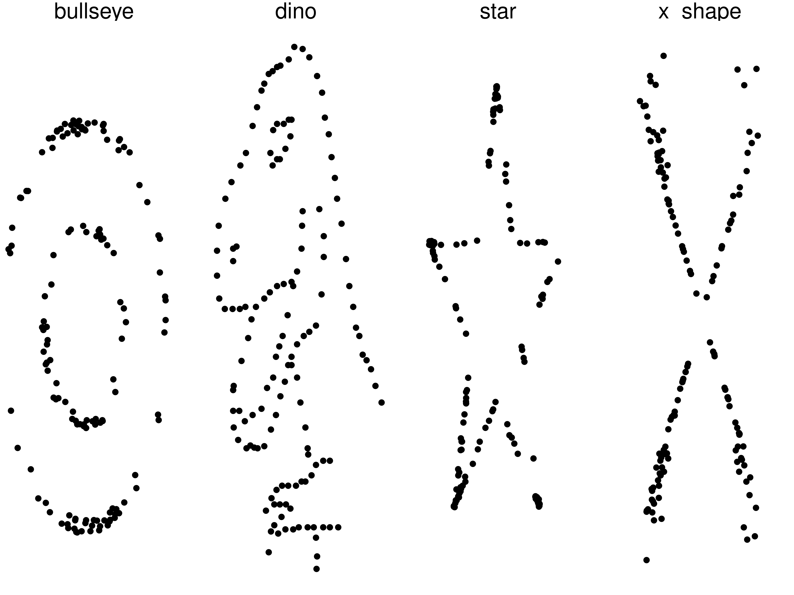
Explore THM
filter(labdata, Measure == "THM") %>%
ggplot(aes(Suburb, Result)) +
geom_boxplot() +
geom_hline(yintercept = .2, col = "red", linetype = "longdash") +
scale_y_log10() +
coord_flip() +
theme_minimal() +
labs(title = "THM Results",
subtitle = "Gormsey") 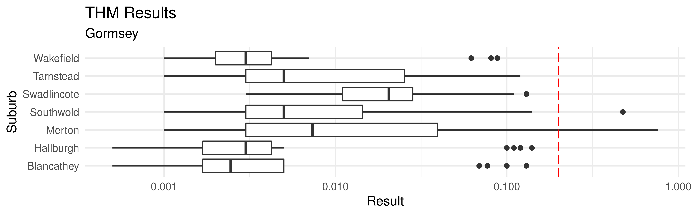
Model
“All models of reality are wrong, but some are useful.”
## # A tibble: 5 × 7
## Sample_No Date Sample_Point Suburb Measure Result Units
## <dbl> <date> <chr> <chr> <chr> <dbl> <chr>
## 1 646594 2069-02-06 ME_19428 Merton THM 0.763 mg/L
## 2 697871 2070-03-26 SO_12771 Southwold THM 0.475 mg/L
## 3 626268 2070-06-12 ME_16234 Merton THM 0.355 mg/L
## 4 674225 2070-08-06 ME_19428 Merton THM 0.268 mg/L
## 5 672190 2070-12-10 ME_16234 Merton THM 0.714 mg/LReflect
Further investigation required to determine the cause
Communicate (RMarkdown)

Tables
library(knitr)
thm_fail <- filter(labdata, Measure == "THM" & Result > .25)
kable(select(thm_fail, Date, Suburb, Result),
caption = "Example outut of the `kable()` function.",
digits = 2)| Date | Suburb | Result |
|---|---|---|
| 2069-02-06 | Merton | 0.76 |
| 2070-03-26 | Southwold | 0.48 |
| 2070-06-12 | Merton | 0.36 |
| 2070-08-06 | Merton | 0.27 |
| 2070-12-10 | Merton | 0.71 |
Rounding Numbers
## [1] 28## [1] 27.87## [1] 30## [1] 27## [1] 28## [1] 27.875Learning Data Science
- Understand the basics
- Code by hand
- Create simple programs
- Practice
- Ask for help
- Build projects
- Help others